Hibrit Mimari: İki Dünyanın En İyisi Supabase ve Spring Boot ile
Yayınlandı: 14 January 2026
Supabase’in basitliği ve Spring Boot’un gücü arasında bir seçim yapmak yerine, neden ikisini de birleştirmelisiniz? Her iki teknolojinin en iyisini kullanan bir hibrit mimari keşfedin.
- tic
-
[]
- Modern mimarlığın yanlış ikilemi
- Mimari Vizyon
- Tasarım İlkeleri
- Akış düzenlemesi
- Karar Matrisi
- Proje Tipine Göre Mimari Örnekleri
- Aşamalı Göç Stratejisi
- Maliyetler ve Operasyonel Dikkat Edilmesi Gereken Hususlar
- Sonuç: Mükemmel denge
- Daha İleri
- Gelişim Perspektifleri
- Mimari Tanıklıklar
- Özet: Modern Bir Mimari Paradigma
- Nihai Sonuç
Modern mimarlığın yanlış ikilemi
Bir modern uygulama statik bir frontend ile geliştirirken, sık sık ikili bir seçenekle karşılaşırsın:
-
Her şeyi bir Backend-as-a-Service çözümüne yatırmak(Supabase, Firebase) - basit ama sınırlı
-
Tam bir backend oluştur(Spring Boot, Node.js) - güçlü ama karmaşık
Bu seçim yanlış bir ikilem. Hibrit mimari bir üçüncü yol sunar: her teknolojiyi onu en iyi olduğu yerde kullan
Mimari Vizyon
Geleneksel Mimari: Monolitik
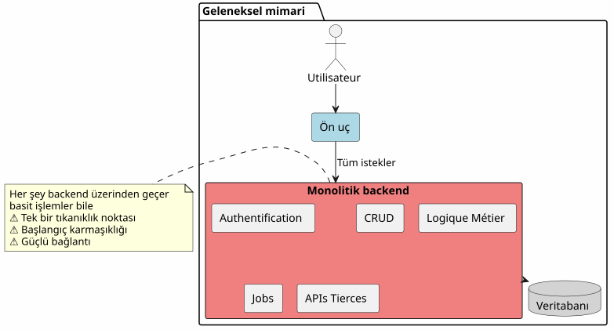
Bu yaklaşımda, hatta en basit işlemler bile (bir makale okuma, bir yorum oluşturma) arka ucundan geçmelidir. İlk gününden beri karmaşıklık maliyetini ödersiniz.
BaaS Mimarisi : Her Temsilci
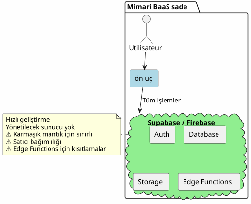
Aksine, tüm işi bir BaaS’e devretmek başta cazip görünür, ancak iş mantığı karmaşıklaştıkça hızla sınırlarını gösterir.
Hibrit Mimari: Sorumlulukların Ayrımı
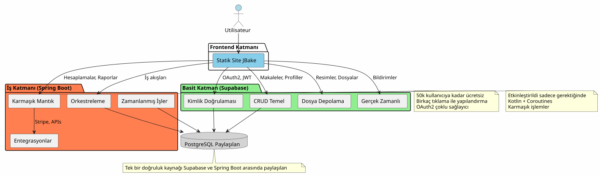
Hibrit mimari, operasyonların karmaşıklığı ve doğasına göre sorumlulukları net bir şekilde ayırır.
Tasarım İlkeleri
İlke 1: Başlangıcı basitleştir, ilerleyişi akıllıca yönet.
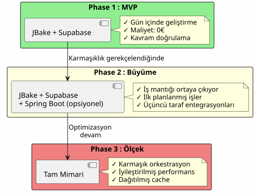
Spring Boot’u oluşturmayın, eğer ihtiyacınız yoksa.Supabase ile başlayın, karmaşıklık gerekli olduğunda Spring Boot ekleyin.
Prensip 2 : İşlemin doğasına göre ayrıştırma

Prinsip 3 : Tek Kaynak Gerçeği
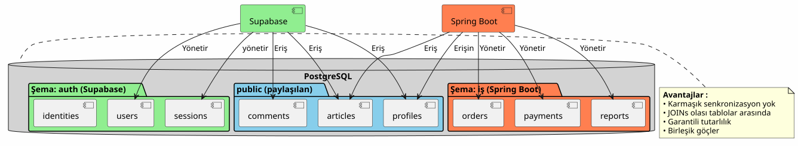
Aynı PostgreSQL örneğini paylaştıkları için, Supabase ve Spring Boot, karmaşık senkronizasyondan kaçınarak aynı veriler üzerinde çalışır.
Akış düzenlemesi
Akım 1 : Merkezi Kimlik Doğrulaması
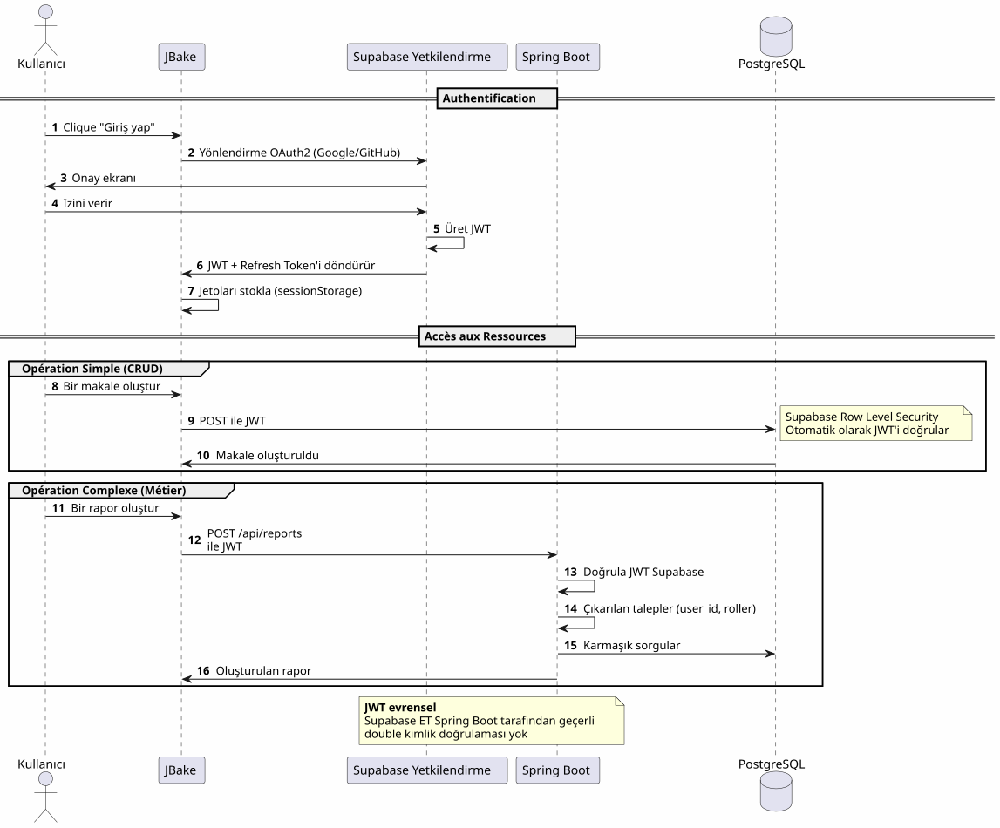
Anahtar noktaTek bir kimlik doğrulama süreci, tek bir JWT, her yerde kullanılabilir.
Akış 2 : Karmaşık Bir İş Sürecinin Orkestrasyonu
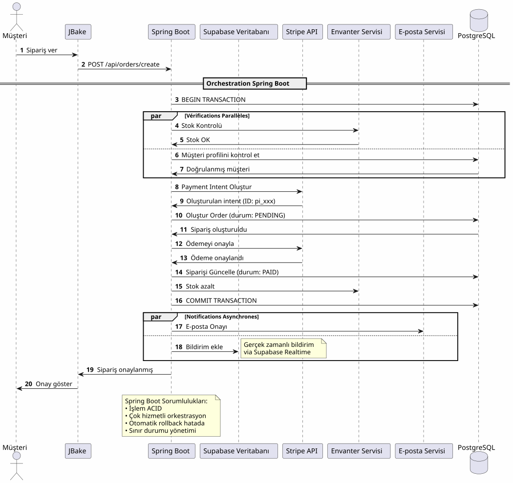
Spring Boot’un getirdiğiBirden fazla sistemdeki karmaşık süreçlerin güvenilir orkestrasyonu ve işlem garantisi.
Akış 3: Zamanlanmış İşler ve Senkronizasyonlar
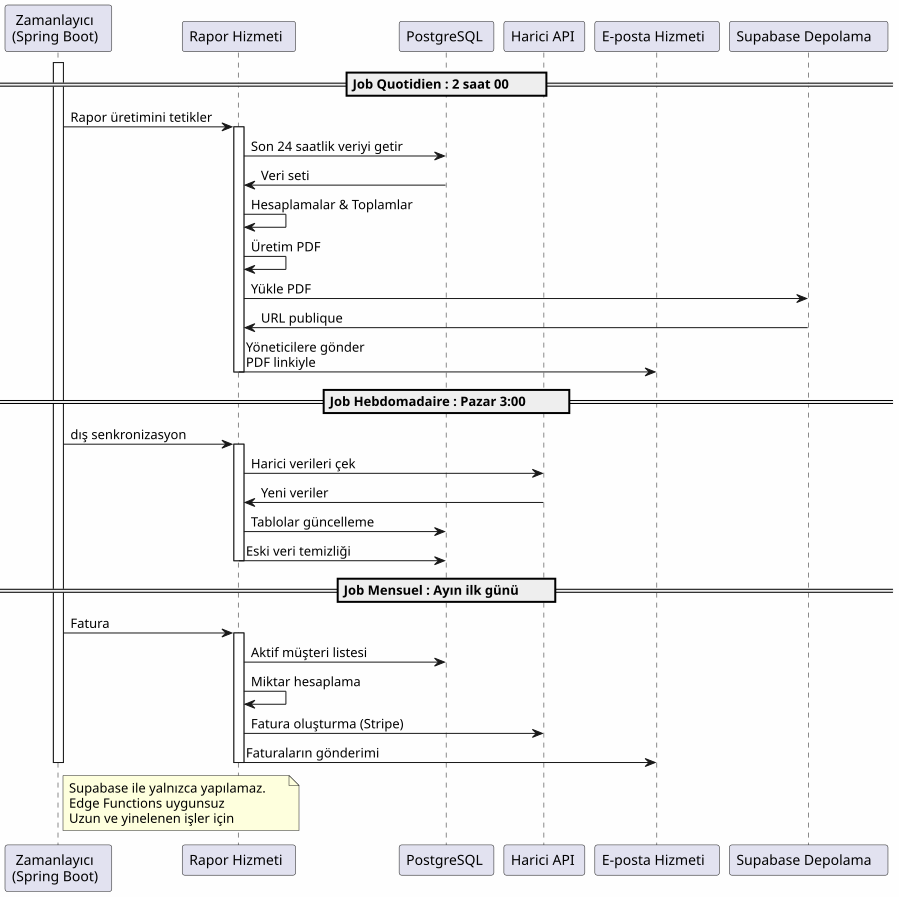
Spring Boot’un sunduğu: Güvenilir zamanlanmış işler, durum yönetimiyle, otomatik yeniden denemeyle ve garantili yürütme.
Karar Matrisi
Supabase ne zaman kullanılır?
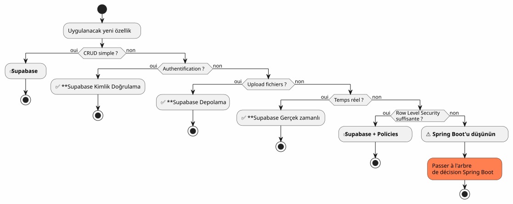
Spring Boot’u Kullanmak İçin Ne Zaman ?
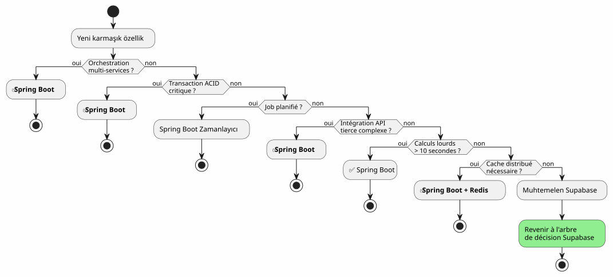
Proje Tipine Göre Mimari Örnekleri
Blog / Portföy
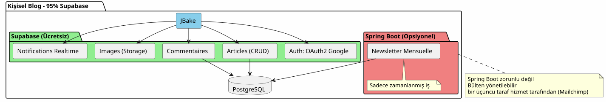
Karar: 100% Supabase yeterli.
SaaS Uygulaması
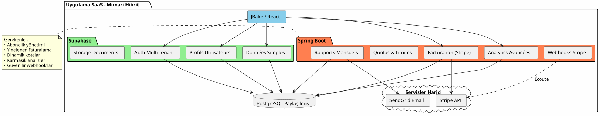
Karar: Hibrit mimari gereklidir. Supabase temel kısım için, Spring Boot kritik kısım (ödemeler, faturalandırma) için.
E-ticaret
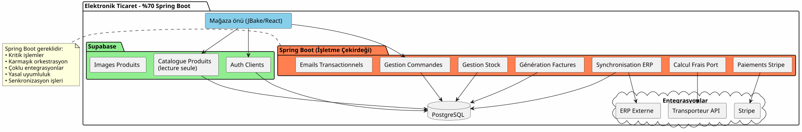
KararSpring Boot zorunludur. Supabase sadece kimlik doğrulama ve katalog için.
Aşamalı Göç Stratejisi
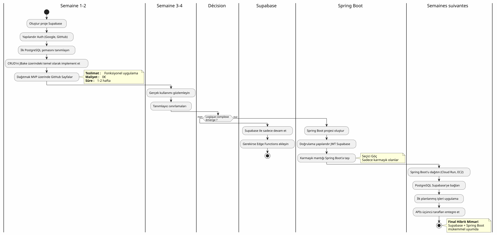
Maliyetler ve Operasyonel Dikkat Edilmesi Gereken Hususlar
Maliyet yapısı
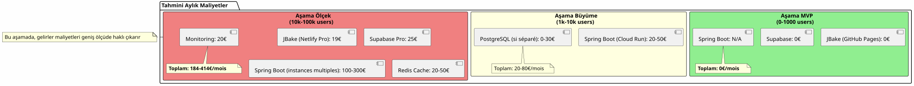
Operasyonel Sorumluluklar
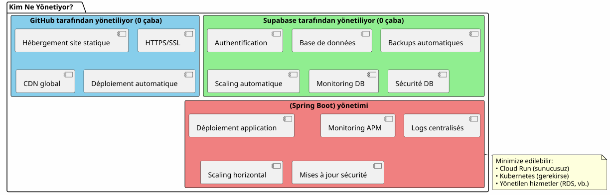
Sonuç: Mükemmel denge
Hibrit mimari Supabase + Spring Boot bir kompromis değil, birsinergi.
Aklında bulundurmanız gereken ilkeler

Bu mimari ne zaman seçilmelidir?
✅ Bu mimari ideal ise :
-
Hızlıca başlatmak istersiniz (MVP günlerde, ayda değil)
-
İş karmaşıklığındaki büyümeyi tahmin ediyorsunuz.
-
Başlangıç maliyetlerini en aza indirmek istersiniz.
-
PostgreSQL’i seversiniz ve tek doğru kaynak istersiniz.
-
Kotlin ve korutunları iş kodu için seversiniz
-
Tam olarak vendor lock‑in’den kaçınmak istersiniz.
BU MİMARI UYGUN DEĞİLSE :
-
Projeniz basit ve öyle kalacak (kişisel blog → %100 Supabase yeterli)
-
Zaten kurulmuş bir back‑end stack’iniz var ve bunu hakim oluyorsunuz.
-
Geleneksel bir monoliti tercih edersiniz
-
.NET, Python veya başka bir dil backend tarafında gereklidir.
Nihai Genel Vizyon
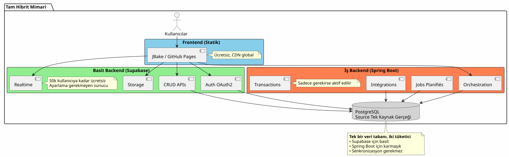
İki Dünya’nın En İyisi
Bu mimari size verir :
🚀 Supabase hızı
-
Saatlerde başlatma, hafta cinsinden değil
-
OAuth2 kimlik doğrulaması birkaç tıklamayla
-
Otomatik olarak üretilen REST API’ler
-
Sıfır sunucu yapılandırması
💪 Spring Boot’un Gücü
-
Şık eşzamansız kod için Kotlin ve Coroutine’lar
-
Karmaşık iş süreçlerinin orkestrası
-
Güvenilir zamanlanmış işler
-
ACID garantili işlemleri
-
Tam Spring ekosistemi
💰 Progresif Ekonomi
-
0€ ile başlatmak ve onaylamak
-
Büyümeyi takip eden maliyetler
-
Aşırı mühendisliği önceden yapmayın.
🎯 Mimari esneklik
-
Yeniden yapılandırmadan kademeli migrasyon
-
Spring Boot, sadece gerekli olduğunda eklenir
-
Toplam satıcı bağımlılığı yok
-
Gelişebilen mimari
Daha İleri
Teknik Kaynaklar
Supabase Dokümantasyonu :
Dökümantasyon Spring Boot :
Ek Makaleler :
-
JWT ile API’lerin Güvenliği
-
PostgreSQL Performans Optimizasyonu
-
Aşamalı göç desenleri
-
Dağıtık mimaride hata yönetimi
Gerçek Kullanım Örnekleri
Bu hibrit mimari başarıyla kullanılır :
-
SaaS B2BSupabase Kimlik Doğrulama, Spring Boot Faturalandırma
-
Pazar yeriSupabase Kataloğu, Spring Boot İşlemleri
-
İçerik platformlarıSupabase makaleleri, Spring Boot analitiği
-
Dahili araçlar: CRUD Supabase, iş akışları Spring Boot
Başlangıç Kontrol Listesi
Faz 1 - Temeller (Hafta 1)
-
Supabase hesabı oluşturun - [ ] PostgreSQL projesini yapılandırma - [ ] Auth’yi Etkinleştir (Google, GitHub) Başlangıç şemasını tanımlamak - [ ] Row Level Security’i yapılandır - [ ] API’leri JBake’den test edin
Faz 2 - MVP (Hafta 2-3)
-
Ana sayfaları uygulamak - [ ] OAuth2 kimlik doğrulamasını entegre edin - [ ] CRUD formlarını oluştur - [ ] Dosyalar için depolamayı yapılandır - [ ] GitHub Pages’e dağıtmak - [ ] Gerçek koşullarda test et
Faz 3 - Gelişme (İhtiyaçlara göre)
-
Karmaşık mantık ihtiyaçlarını belirle - [ ] Gerekirse Spring Boot projesi oluştur - [ ] Supabase’de JWT doğrulamasını yapılandırma - [ ] PostgreSQL Supabase’e Bağlan - [ ] Karmaşık özellikleri göçürmek Zamanlanmış işleri uygulama - [ ] Spring Boot’u dağıt (Cloud Run, vb.)
Kaçınılması Gereken Anti-Patternler
❌ Ne pas faire :
-
Verileri Supabase ile Spring Boot arasında kopyala
-
İki ayrı PostgreSQL veritabanı oluştur
-
Kimlik doğrulamanızı kendiniz kodlayın
-
Spring Boot’u basit CRUD işlemleri için kullanın
-
Aşırı mimarileştirmeyi ilk etapta yapmak
-
Supabase Row Level Security’ini yoksay
Daha iyisi:
-
Tek bir PostgreSQL veritabanını paylaşmak
-
Kimlik doğrulamasını Supabase’e bırakın
-
Sadece karmaşıklık için Spring Boot kullanmak
-
Basit başla, yavaşça ilerle
-
Her teknolojinin gücünden yararlanmak
-
Veritabanı seviyesinde RLS ile güvenlik sağlamak
Gelişim Perspektifleri
Yeni Yetkinlikler Eklendi
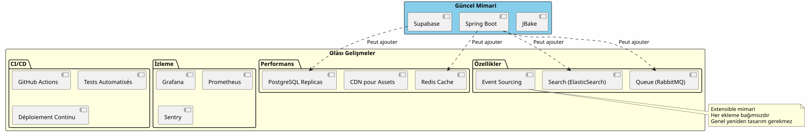
Yatay ölçekleme
Uygulamanız büyüdükçe, hibrit mimari doğal olarak ölçeklenir:
Supabase :
-
Otomatik olarak milyonlarca işleme kadar ölçeklenir
-
Okuma replikaları okuma performansı için
-
Güvenlik için zaman içi kurtarma
Spring Boot:
-
Birden fazla örnek, load balancer’ın arkasında
-
Stateless tasarımı yatay ölçeklendirmeyi kolaylaştırır.
-
Gerekirse orkestrasyon için Kubernetes
PostgreSQL :
-
Büyük tablolar için partitioning
-
Bağlantı havuzu (PgBouncer)
-
Sharding gerçekten gerekiyorsa (nadir)
Mimari Tanıklıklar
Startup SaaS (50k kullanıcı)
(No content) Supabase ile %100 başladık. 5k kullanıcıda yalnızca Stripe faturalandırma ve aylık raporlar için Spring Boot ekledik. Bir yıl sonra, operasyonlarımızın %80’i hâlâ Supabase üzerinden geçiyor. Spring Boot sadece kritik kısmı yönetiyor. Bu ayrım, yeniden tasarım yapmadan ölçeklememizi mümkün kıldı. __
E-öğrenme platformu (10k kullanıcılar)
_ Supabaseteki OAuth2 kimlik doğrulaması, bizim için üç hafta geliştirme süresi kazandırdı. Otomatik olarak üretilen API’ler, tüm ders kataloğumuzu yönetir. Spring Boot sadece PDF sertifikaları ve ilerleme e-postaları için kullanılır. Basit, sürdürülebilir ve ölçeklenebilir mimari. _
Marketplace B2B (3k kullanıcı)
(empty) Spring Boot, alıcılar ve satıcılar arasındaki işlemleri yönetir (kritik). Supabase, kalan her şeyi yönetir: profiller, gerçek zamanlı mesajlaşma, belgeler. Aynı PostgreSQL veritabanını paylaştıkları için karmaşık senkronizasyondan kaçınırız. Yapımdaki en iyi mimari seçim budur. (blank)
Özet: Modern Bir Mimari Paradigma
Supabase ve Spring Boot hibrit mimarisi yeni bir paradigmadır:mimari uzmanlık.
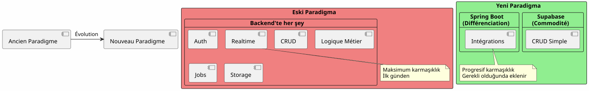
Temel ilke:Zaten hizmet olarak mevcut olan şeyleri yapmayın; uygulamayı ayırt eden şeylere odaklanın.
80/20 Kuralı
Çoğu uygulamada :
-
80% operasyonStandart CRUD’tur → Supabase
-
%20 operasyonlariş mantığı gerektirir → Spring Boot
Bu doğal kural, hibrit mimariyi gerekçendirir.
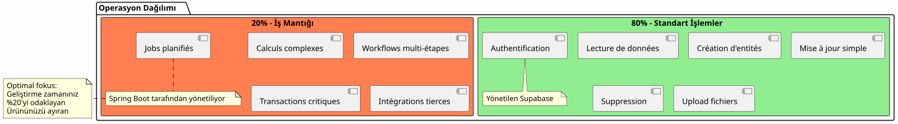
Nihai Sonuç
Hibrit mimari teknik bir kompromis değildir, birstratejik karar.
Size … yapmanıza izin verir:
-
✅ İşlevsel bir MVP ile hızlıca başlayın
-
✅ Pazarınızı ağır bir yatırım yapmadan doğrulayın
-
Karmaşıklık gerektirdiğinde adım adım gelişmek
-
Her aşamada maliyetlerinizi kontrol edin
-
Her bir teknolojiden en iyisini kullanın
-
Erken aşırı mühendislik yapmaktan kaçının.
-
✅ Gelecek için esnekliği koruyun
O temsil eder :
-
🎯 pragmatizm: Her teknolojiyi, ona iyi olduğu yer
-
🚀HızPazarlamaya giriş süresi az
-
💰EkonomiDeğere uygun maliyetler
-
🔮ÖlçeklenebilirlikSizinle birlikte büyüyen mimari
-
🛡️DayanıklılıkKanıtlanmış ve güvenilir hizmetler
Sonraki Adımınız
Bu mimari size hitap ediyorsa, başlamanız gereken yer budur:
-
Supabase hesabı oluşturun(ücretsiz)
-
Minimum veri şemanızı tanımlayın
-
OAuth2 kimlik doğrulamasını yapılandırın
-
API’yi kullanan ilk JBake sayfanızı oluşturun.
-
GitHub Pages’e deploy edin
Çalışan bir MVP’niz olacakbirkaç gün.
Spring Boot, ihtiyacınız olduğunda doğal olarak gelecek. Daha önce değil.
Hibrit mimari, ihtiyaç duyulan şeyi tam olarak ve gerektiğinde inşaat etme sanatıdır.
İyi geliştirme ! 🚀
Bu makaleyi paylaşın; eğer diğer geliştiricilerin doğru mimari seçimleri yapmalarına yardımcı olabileceğini düşünüyorsanız